👥
Personal de enfermería
Equipo asistencial que brinda cuidado a los pacientes, integrado por profesionales y auxiliares distribuidos por turnos.
Una guía visual, didáctica e interactiva para garantizar la continuidad, la seguridad y la humanización del cuidado en cada cambio de turno hospitalario.
GDI-INV-ENF-PR-006
01 · Septiembre 2025
Enfermería · Terapia · Docencia-servicio
Atención inicial · Observación · Internación
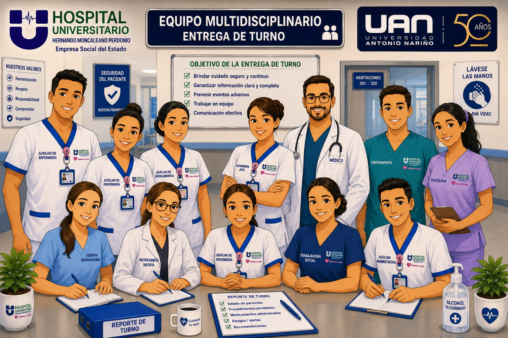
El equipo asistencial — profesionales y auxiliares de enfermería — reunido en la estación, comunicando información clara y completa sobre los pacientes para garantizar la continuidad y la seguridad del cuidado.
Un proceso de comunicación informativo y educativo que conecta dos turnos en torno al cuidado del paciente.
Es el proceso de comunicación mediante el cual el personal de enfermería entrante y saliente intercambia información sobre la situación clínica y el plan de cuidados de cada paciente, además de toda la información administrativa de la unidad funcional.
Su propósito es orientar la práctica diaria, asegurar y mantener la continuidad y la calidad del cuidado directo, en pro de la seguridad del paciente.
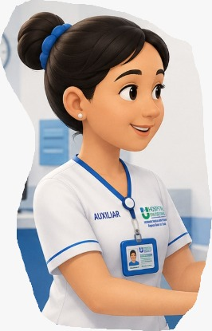
Entrega información clínica, novedades y pendientes
Recibe, valida y continúa el cuidado
Equipo asistencial que brinda cuidado a los pacientes, integrado por profesionales y auxiliares distribuidos por turnos.
Sujeto objeto de cuidado que recibe los servicios de un médico u otro profesional de la salud.
Documento que surge en el contacto entre el equipo de salud y el usuario. Único documento válido desde el punto de vista médico y legal.
Sesión informativa breve y concisa para transmitir información clave y dar instrucciones claras al equipo.
Garantizar continuidad, calidad, humanización y seguridad en la atención durante el cambio de turno.
Transmitir la información en la entrega y recibo de turno relacionada con la atención en salud de los pacientes de la E.S.E. Hospital Universitario Hernando Moncaleano Perdomo de Neiva en las diferentes unidades asistenciales, garantizando continuidad en el proceso de atención asistencial y administrativo, calidad, humanización del servicio, seguridad y accesibilidad al paciente y su familia, con el fin de garantizar la atención centrada en la persona y su familia, disminuir los riesgos de eventos adversos y fallas en la gestión clínica de los mismos.
Establecer un formato estandarizado para la entrega y recibo de turno que garantice la transmisión completa y clara de la información relevante del paciente.
Fomentar la comunicación efectiva y bidireccional entre el personal de enfermería saliente y entrante, minimizando errores por omisión o malinterpretación de datos.
Asegurar la continuidad del cuidado del paciente, proporcionando información precisa, actualizada y pertinente sobre el estado clínico, tratamientos, procedimientos pendientes y eventos relevantes durante las 24 horas.
Definir los roles y responsabilidades del personal de enfermería durante el proceso de entrega y recibo de turno para garantizar un traspaso ordenado y eficiente.
Reducir los eventos adversos relacionados con fallas en la comunicación entre turnos, promoviendo una cultura de seguridad y responsabilidad compartida.
Incluir herramientas de apoyo como listas de verificación (checklist), registros escritos y entrega oral estructurada, para sistematizar el proceso.
Capacitar al personal de enfermería en el uso adecuado del protocolo, asegurando su comprensión e implementación uniforme.
Evaluar periódicamente el cumplimiento y la eficacia del protocolo de entrega y recibo de turno, proponiendo mejoras continuas.
Realizar la entrega administrativa del servicio que incluya novedades de personal, inventario de equipos, materiales y suministros.
Incluir al paciente y su familia al momento de hacer su plan de cuidados y alentarlo a cumplir los objetivos propuestos.
La evidencia (Grado 1A) sugiere que verificar estos elementos es crucial para garantizar una transferencia de turno segura y efectiva.
Verificación previa del historial clínico del usuario.
Actualizadas y aplicadas para cada paciente de la unidad.
Y plan de cuidados de enfermería actualizados.
Diligenciado por el médico saliente.
Cumpliendo el manual GTH-TH-M-007 (ver sección dedicada).
5 minutos antes para iniciar la ronda con manos seguras.
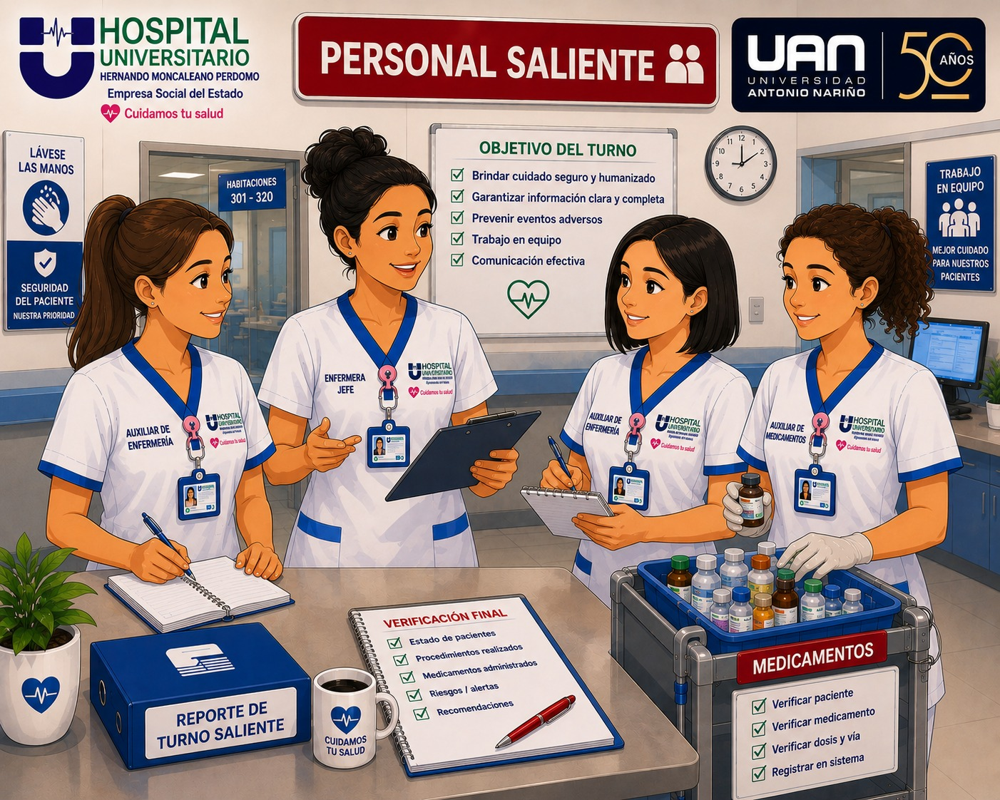
Profesional + auxiliares + auxiliar de medicamentos. Espera ser relevado antes de retirarse.
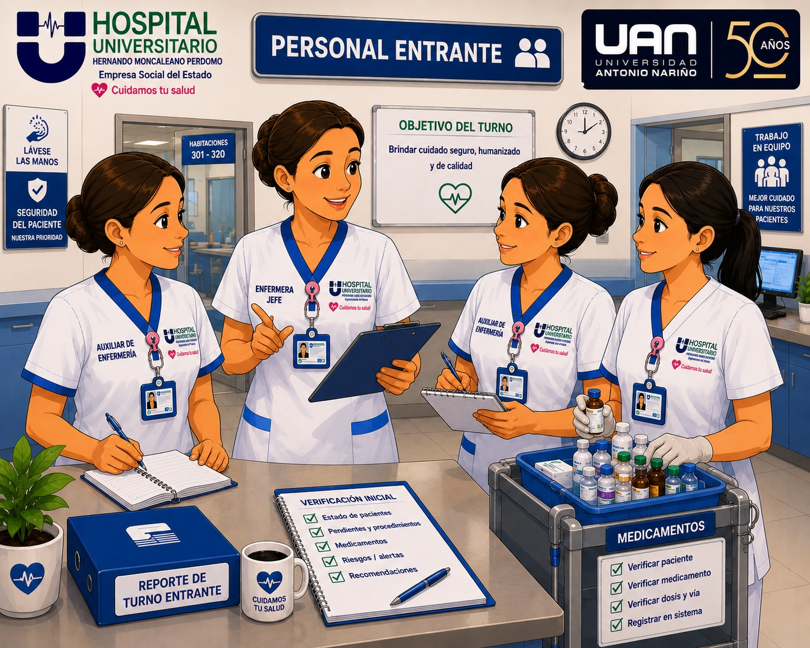
Profesional + auxiliares + auxiliar de medicamentos. Permanece durante toda la entrega.
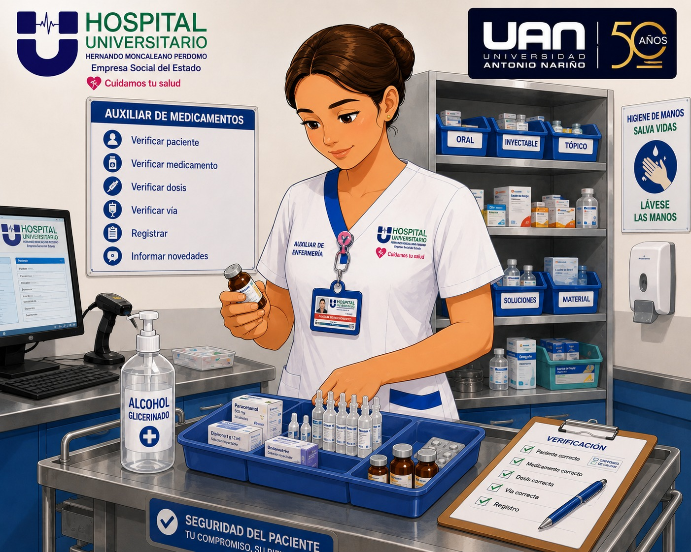
Diligencia el formato de novedades (Anexo 3) y entrega mano a mano. Ambos auxiliares hacen arqueo conjunto.
Hospitalización y cirugía: médico general en el turno de 7:00 am. UCI: especialista en medicina crítica por turno.
Pacientes pendientes de traslado a UCI o en código lila.
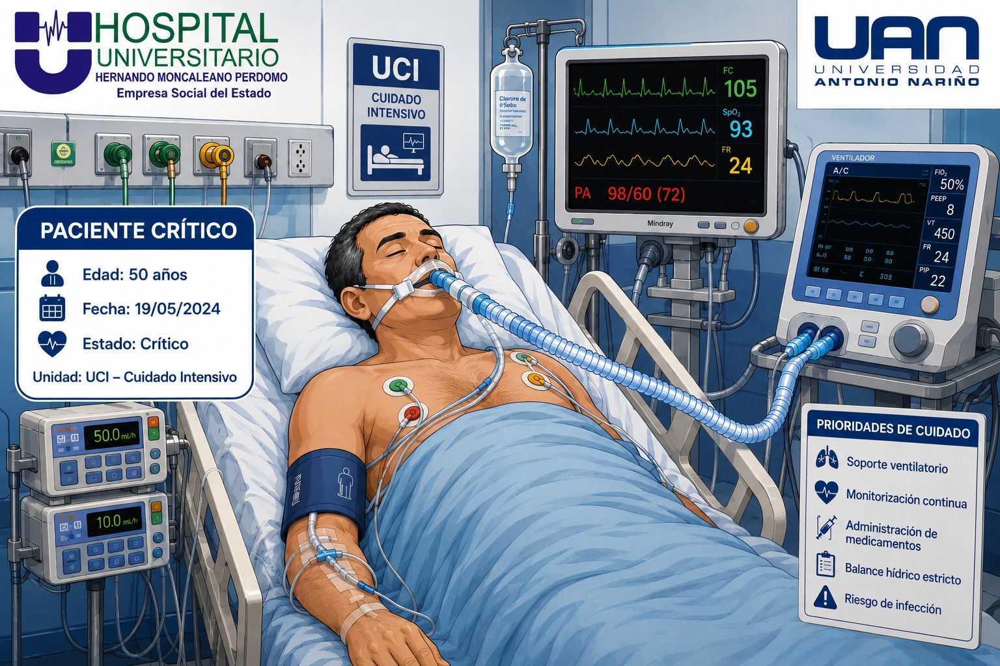
Paciente críticoPacientes con inmunidad comprometida.
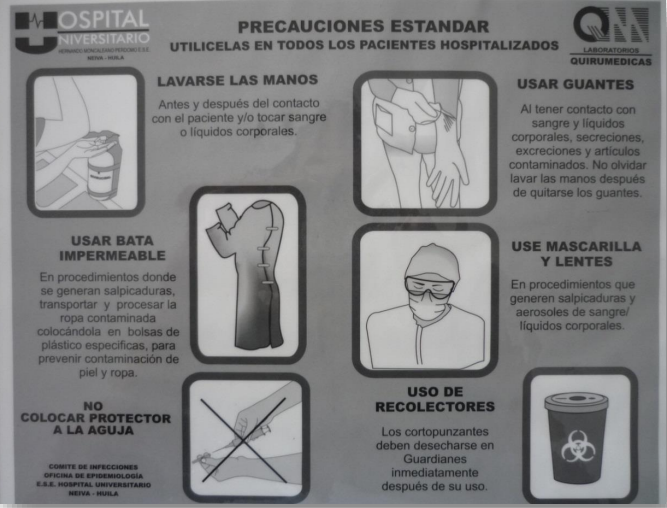
ProtectorSin requerimiento de aislamientos. Se aplican únicamente las precauciones estándar.
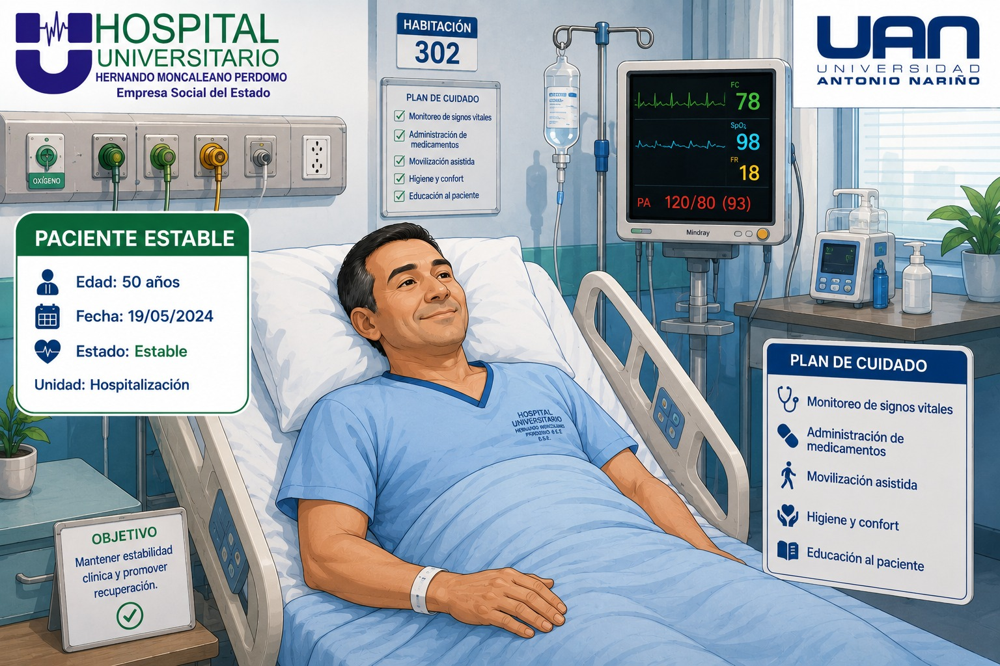
EstablePor último, para minimizar riesgo de transmisión a otros pacientes.
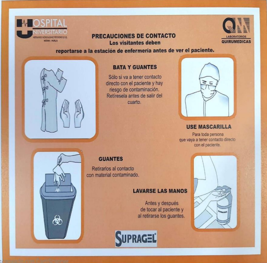
Contacto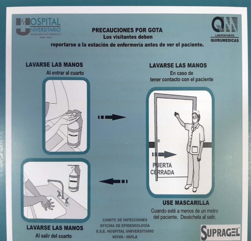
Gota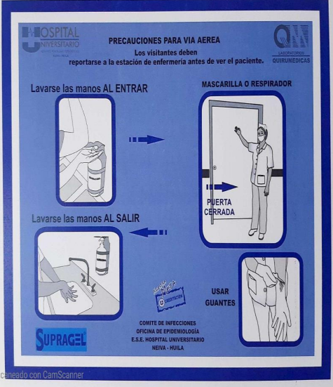
Aerosol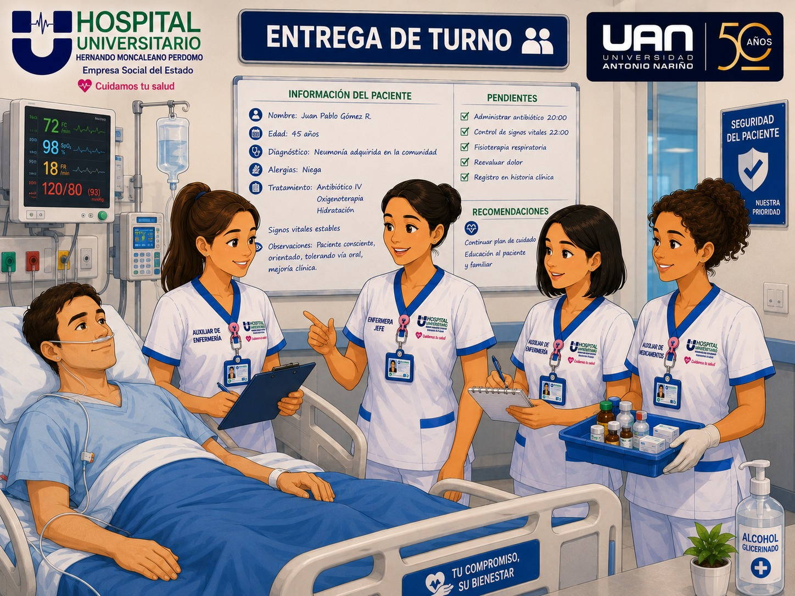
Realice la entrega al alcance del oído y la vista del paciente. Esto permite involucrar más activamente al usuario y su familia en la conversación, mejorando la comprensión y la seguridad.
Liderado por el profesional de enfermería que entrega. Cada letra abarca un elemento esencial para garantizar la continuidad de la asistencia, organizando la información de forma lógica y estructurada.
Datos básicos para reconocer al paciente y al profesional responsable del cuidado.
Definición clara del problema actual objeto de asistencia.
Exposición breve y ordenada de las funciones vitales y la evolución durante el turno.
Medidas diagnósticas y terapéuticas realizadas o por realizar.
Aspectos clave que requieren atención especial, sobre todo en pacientes críticos o graves.
Saludo y presentación del equipo al ingresar
Ronda en orden: críticos → protector → estables → aislamientos
Ubicarse en la cabecera del paciente
Lenguaje simple, sin abreviaturas técnicas
Aplicar estrategias para evaluar la comprensión
Escenas ilustradas que muestran cada momento clave del proceso de entrega y recibo de turno: desde la preparación hasta la activación del paciente.
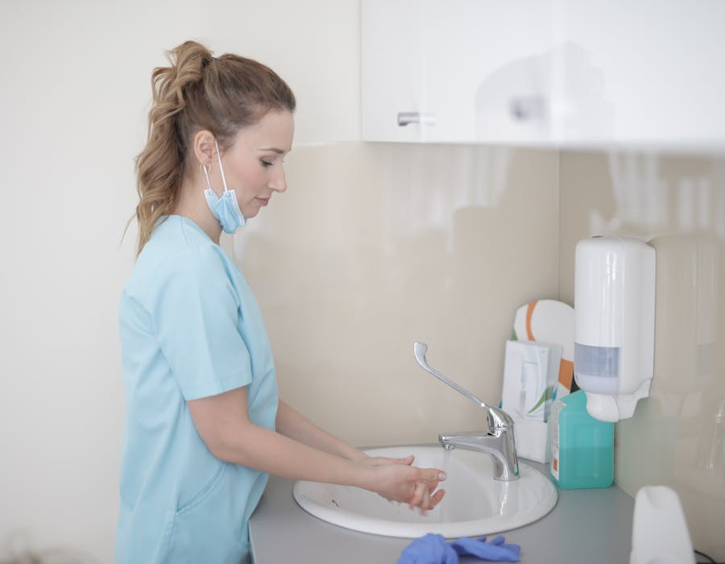
Los 5 momentos de higiene de la OMS antes y durante la ronda. Manos seguras, paciente seguro.
Comunicación estructurada paciente por paciente: identificación, diagnóstico, estado, actuaciones y signos de alarma.
El equipo se ubica al alcance del oído y la vista del paciente, invitándolo a participar de la conversación.
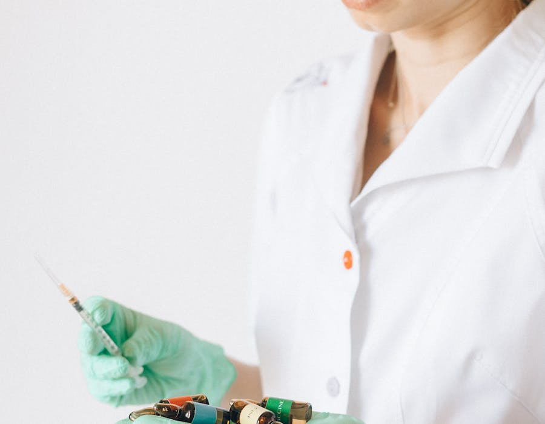
El auxiliar de medicamentos saliente y entrante hacen el arqueo y revisan los equipos de cada paciente.
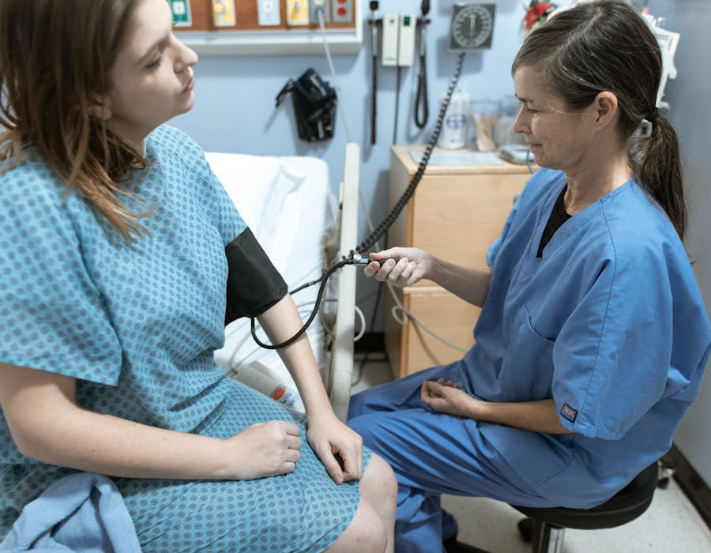
Revisión de venopunciones, sondas, drenajes, integridad de piel y verificación del entorno seguro.
Reunión rápida del equipo al cierre de la ronda: información clave y plan de cuidados para el turno.
Es un error asumir que el paciente y la familia participarán en el traspaso solo por estar presentes. Hay que invitarlos explícitamente a participar.
Pregunte explícitamente si tiene alguna duda y aliéntelo a compartir su comprensión del plan en sus propias palabras.
Use indicaciones específicas para animarlos a expresar inquietudes y sus objetivos personales para el tratamiento.
Invítelos explícitamente a participar; un traspaso al pie de la cama no es automáticamente participativo.
14 pasos secuenciales para una entrega segura, humanizada y centrada en el paciente. Cada paso indica el responsable.
Antes de iniciar, informe al usuario que se dará comienzo a la entrega de turno. Explíquele en lenguaje sencillo qué va a ocurrir y por qué.
Informar al profesional sobre: intolerancias, no disponibilidad de medicamentos, negaciones del paciente o cambios del tratamiento durante el turno.
Realice el lavado siguiendo los 5 momentos de higiene de la OMS antes de iniciar la ronda. Se repite luego de revisar 5 usuarios y se higieniza entre cada uno.
Aplique medidas en caso de aislamientos según el manual VE-EPI-M-001C de prevención de infecciones (EPP, distanciamiento, etc.).
Al ingresar a la habitación, salude por su nombre, presente al jefe entrante, médico y auxiliares responsables de la siguiente jornada.
Cumplimiento de aislamientos, barandas arriba, escalerilla en cada unidad y timbre de enfermería en funcionamiento.
Verifique mesas de noche, atriles, bombas, camas y mesas puente: limpias y con objetos en su lugar.
El profesional, en conjunto con el auxiliar, inicia la entrega del paciente bajo la metodología IDEAS (Identificación, Diagnóstico, Estado, Actuaciones, Signos de alarma).
Escuche el informe verbal e informe de inmediato cualquier alteración encontrada en signos vitales u otra condición que requiera atención.
Revisión cefalocaudal: venopunción, sondas, catéter, curaciones, drenajes, integridad de la piel e higiene corporal. Verifique alertas de ayuno, fichas de riesgo de caídas y lesiones de piel. Otro auxiliar verifica el entorno: limpieza, guardianes (fechas vigentes, agujas sin capuchón), rótulos de medicamentos, equipos y líquidos con sticker institucional.
Pregunte y escuche al usuario sobre dudas y comprensión del objetivo del turno. Verifique que la información brindada es clara y cumple con sus expectativas.
Confirmar la información en el libro de entrega y retroalimentar al personal si es necesario.
Despídase del usuario indicando que el equipo queda atento ante cualquier necesidad.
Realice lavado de manos final según VE-EPI-M-001C (Manual de prevención y control de infecciones).
Lo que el profesional debe entregar y verificar al cambio de turno · Grado B1
La única situación que permite obviar la ronda de enfermería liderada por el profesional será cuando exista una urgencia o situación prioritaria con algún paciente. En ese caso, se permite la ausencia de la jefe y los auxiliares necesarios para la atención. El resto del personal debe continuar la ronda según los lineamientos que apliquen a su perfil.
El uniforme es un medio de identificación y brinda al trabajador sentido de pertenencia hacia la institución. Debe mantenerse siempre limpio, planchado y en buen estado.
Visible siempre para que los usuarios puedan identificar al colaborador.
Uniforme y calzado siempre en buen estado y bien presentados.
Debe realizarse con el uniforme institucional asignado.
Por fuera de la inferior, a la altura de la cadera. Usar ropa interior adecuada para uniformes blancos.
Completamente cerrado, sin huecos, liviano y cómodo (Seguridad y Salud en el Trabajo).
Cumplimiento obligatorio de normas de bioseguridad e higiene industrial.
Tela blanca antifluido con detalles azul rey institucional. Bordado: lado izquierdo logo, derecho "Enfermero". Bata blanca manga larga exclusiva para enfermeros (uso fuera de servicios y áreas comunes).
👟 Calzado blanco cerrado, suela antideslizanteTela blanca antifluido. Blusa con cuello y dos botones, dos bolsillos inferiores. Pantalón con bolsillos profundos. Aplica para todos los servicios incluidos laboratorio y banco de sangre.
👟 Calzado blanco cerradoTela azul oscuro antifluido. Fisioterapeutas, bacteriólogos, nutricionistas, psicólogas, trabajadoras sociales, técnicos. Cuello en V, dos bolsillos inferiores, pantalón con bolsillo camuflado.
👟 Calzado según rolConjunto azul oscuro antifluido. Camisa con manga corta, cuello en V, bolsillos profundos. Pantalón con bolsillo camuflado.
Propiedad del Hospital, exclusivo para Salas de Cirugía, Sala de Partos, Procedimientos y Esterilización. Prohibido transitar con él por áreas comunes.
En UCI, chaqueta manga larga (no para ingreso a cubículo). En hospitalización, bata manga larga (no en contacto con paciente). No se usan fuera del servicio.
Solo material desechable (no tela). Obligatorio en aislamientos, preparación de medicamentos y actividades asépticas. El cabello debe permanecer recogido en todo momento.
No están prohibidos ni restringidos, pero se debe garantizar adecuada higienización por parte del personal que los utiliza.
Versión actualizada con 25 criterios organizados en 3 momentos: antes, durante y después de la ronda.
Jefe que recibe verifica asignaciones de personal, cambios de turno, presentación personal (cabello recogido, carné, uñas cortas, zapato cerrado).
La entrega y recibo se realiza a la hora establecida (7am - 1pm - 7pm), con todo el personal presente.
Personal que entrega y que recibe presentes según asignación.
Auxiliar de medicamentos saliente diligencia formato de novedades (Anexo 3) y entrega al jefe. Arqueo de medicamentos con auxiliar entrante. Revisión de equipos en cada paciente.
Orden de entrega: 1) críticos / código lila, 2) aislamiento protector, 3) estables sin aislamiento, 4) aislamiento de contacto, gota y aerosol.
Lavado de manos (Grado 1A) antes de iniciar. Se repite cada 5 usuarios e higienización entre cada uno.
Adoptar medidas de seguridad para atención (aislamientos según manual de prevención de infecciones).
Entrega frente a la cabecera de la cama.
Saludo cordial y respetuoso, presentando al equipo entrante (jefes, médico y auxiliares incluyendo el de medicamentos).
Medidas de seguridad: aislamientos, barandas arriba, escalerilla, timbre funcionando.
Unidades en orden y aseo: mesas de noche, atriles, bombas, camas, mesas puente.
I — IDENTIFICACIÓN: nombre completo, número de identificación, edad, días de estancia. (Neonato: nombre de la mamá; gemelo: número de orden de nacimiento.)
D — DIAGNÓSTICO: definición clara del problema actual, antecedentes y enfermedades crónicas (médico y de enfermería).
E — ESTADO: el auxiliar informa signos vitales de entrega, escalas de valoración del riesgo, novedades, balance de líquidos, drenajes.
Valoración cefalocaudal: integridad de piel, accesos venosos (CVC, PICC, catéter periférico) con identificación, fijación, limpieza, sin signos de infección.
Drenajes, sondas nasogástricas, vesicales, tubos a tórax, equipos de terapia, NE/NPT, humidificadores con rótulo.
Manillas de identificación con identificación redundante según riesgo. Barandas y escalerilla.
Equipos de terapia intravenosa (bomba, macrogoteo, anestesia, llave de 3 vías, dial-a-flow, conectores, multifló) identificados y vigentes.
A — ACTUACIONES: cambios clínicos, plan de cuidados, ayuno, exámenes pendientes, traslados y autorizaciones. Gineco: alojamiento conjunto.
S — SIGNOS DE ALARMA: educación al usuario para informar (timbre/acompañante). Verificación de comprensión y expectativas.
Jefe que entrega informa novedades del turno: camas, fallecidos, prioritarios, infraestructura, mantenimiento, dotación.
Áreas de medicamentos, procedimientos, trabajo limpio y sucio limpias y en orden. Rotulación de insumos (alcohol, quiruger, detergine, vaselina, furacin) con fechas.
Entrega del carro de paro: actas actualizadas, revisión externa por turno, interna mensual. Bombas, monitores, desfibriladores, electrocardiógrafos conectados y limpios.
Recipientes para cortopunzantes (guardianes y contenedor) fijados, rotulados, sin agujas reenfundadas.
Nevera de medicamentos limpia, registro diario de temperatura. Multidosis rotulados y de pacientes de la unidad.
Ayudas visuales utilizadas para capacitar al personal asistencial. Descarga, comparte y úsalas en las jornadas de formación.
Resumen visual de las 5 letras del método con tips de aplicación.
Presentación completa para capacitaciones del personal de enfermería (39 diapositivas).
Guarda nuevos PDFs, imágenes o videos en la carpeta materiales/ y enlázalos aquí.
Proyecto_valentina/materiales/
materiales/ del proyecto.infografia-ideas.pdfpresentacion-protocolo.pdfindex.html y cambia el href, título y descripción.